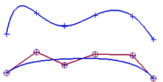

艺术样条
艺术样条是创建自由成形曲线的推荐方法，它们都是 NURBs (非均匀有理 B 样条)。
有两种基本的方法创建艺术样条：通过点以及根据极点，每种方法创建的的样条都是样条特征，并且是关联的 — 可以通过使用和创建时一样的对话框编辑。它们都可以在艺术样条对话框中找到。
通过点 |
当要求曲线精确地通过一些位置时使用，在美学的设计方面不是很常用，因为光顺度的控制并不是很重要的因素。 |
根据极点 |
当您需要一条光顺的样条，并且只精确地通过给定的起始和终止位置，用户定义的位置决定了样条的控制多边形。 |
在下面的例子中，所有的样条都是使用独一无二的位置集来创建：

上方的样条使用通过点创建。
下方的样条使用根据极点创建，控制多边形显示为红色。
|
注释 |
有两个命令都叫样条，这堂课中讨论的是艺术样条 |